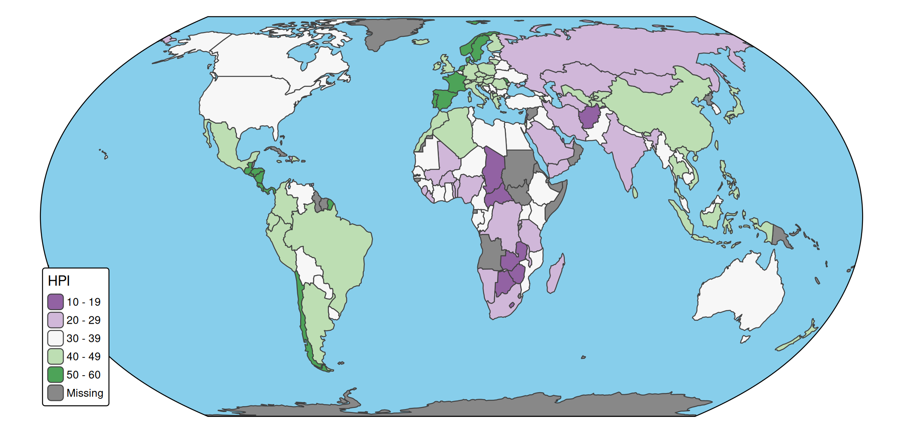

What is layout?
With layout we mean all aspects of how the plot looks like, except for
- specifications of data-driven visual variables.
- the layout of legends
- the layout ovf map components
What is left? Background colors, frames, panels, fonts, margins, etc.
All these layout options can be changed via tm_layout(). The large number of arguments can be overwhelming. These also include all the default settings of legends and map components. See in-depth vignette on tmap options.
In this vignette, we’ll cover the most important layout settings. First, let’s create a map:
tm = tm_shape(World, crs = "+proj=eqearth") + tm_polygons("HPI", fill.scale = tm_scale_intervals(values = "pu_gn"))Background colors
The background colors inside and outside the map frame are specified as follows:
tm + tm_layout(
bg.color = "skyblue",
outer.bg.color = "gold")Frame
The map frame can be disabled by setting frame = FALSE:
tm + tm_layout(
bg.color = "grey90",
frame = FALSE)
In that case, the background color of the whole area is determined by bg.color and not by outer.bg.color anymore.
tm + tm_layout(
bg.color = "skyblue",
earth_boundary = TRUE,
outer.bg.color = "gold",
space.color = "darkblue")
Earth boundaries
For certain map projections, including the used one, we can infer the ‘earth boundaries’. We can enable them with the option earth_boundary. The background color outside of the earth boundaries (and inside the map frame if specified) are determined by space.color.
For this type of map, it makes sense to disable the map frame, and place the legend in the corner of the map, perhaps even with a bit of overlap.
tm_shape(World, crs = "+proj=eqearth") +
tm_polygons(
fill = "HPI",
fill.scale = tm_scale_intervals(values = "pu_gn"),
fill.legend = tm_legend(position = c("left", "bottom"))) +
tm_layout(bg.color = "skyblue",
earth_boundary = TRUE,
frame = FALSE,
space.color = "white")Panels
To change the appearance of panels the options with the prefix panel. are usd:
tm_shape(World, crs = "+proj=eqearth") +
tm_polygons(c("well_being", "footprint")) +
tm_layout(panel.label.bg.color = "gold",
panel.label.size = 2,
panel.label.height = 3) 
Panels can be disabled using panel.show = FALSE:
tm_shape(World, crs = "+proj=eqearth") +
tm_polygons(c("well_being", "footprint")) +
tm_layout(panel.show = FALSE) Margins
Margins can be set with inner.margins, outer.margins, meta.margins.

The four numbers are the margins for bottom, left, top, and right respectively. The units are relative to the map frame, so 0.02 means (about) 2 percent of the frame height.
Setting the margins is quite complex because it depends on the aspect ratios (width/height) of the spatial object and the graphics device. See in-depth vignette.